Joint Models for Longitudinal and Time-to-Event Data
jm.RdFits multivariate joint models for longitudinal and time-to-event data.
jm(Surv_object, Mixed_objects, time_var, functional_forms = NULL, data_Surv = NULL, id_var = NULL, priors = NULL, control = NULL, ...) value(x) slope(x) area(x) tv(x, knots = NULL, ord = 2L)
Arguments
| Surv_object | an object:
|
|---|---|
| Mixed_objects | a
|
| time_var | a |
| functional_forms | a |
| data_Surv | the |
| id_var | a |
| priors | a named
|
| control | a list of control values with components:
|
| x | a numeric input variable. |
| knots | a numeric vector of knots. |
| ord | an integer denoting the order of the spline. |
| ... | arguments passed to |
Details
The mathematical details regarding the definition of the multivariate joint model, and the capabilities of the package can be found in the vignette in the doc directory.
Value
A list of class jm with components:
a list of the MCMC samples for each parameter.
a list of the acceptance rates for each parameter.
a matrix of dimensions [((n_iter - n_burnin)/n_thin)*n_thin, number of individuals], with element [i, j] being the conditional log-Likelihood value of the \(i^{th}\) iteration for the \(j^{th}\) individual.
a matrix of dimensions [((n_iter - n_burnin)/n_thin)*n_thin, number of individuals], with element [i, j] being the marginal log-Likelihood value of the \(i^{th}\) iteration for the \(j^{th}\) individual.
an object of class proc_time with the time used to run jm.
a list with posterior estimates of the parameters (means, medians, standard deviations, standard errors, effective sample sizes, tail probabilities, upper and lower bounds of credible intervals, etc.).
a list of lists with fit statistics (DIC, pD, LPML, CPO, WAIC) for both conditional and marginal formulations.
a list of data used to fit the model.
a list of components of the fit useful to other functions.
a list with the initial values of the parameters.
a copy of the control values used to fit the model.
a copy of the priors used to fit the model.
the matched call.
Author
Dimitris Rizopoulos d.rizopoulos@erasmusmc.nl
See also
Examples
# \donttest{ ################################################################################ ############################################## # Univariate joint model for serum bilirubin # # 1 continuous outcome # ############################################## # [1] Fit the mixed model using lme(). fm1 <- lme(fixed = log(serBilir) ~ year * sex + I(year^2) + age + prothrombin, random = ~ year | id, data = pbc2) # [2] Fit a Cox model, specifying the baseline covariates to be included in the # joint model. fCox1 <- coxph(Surv(years, status2) ~ drug + age, data = pbc2.id) # [3] The basic joint model is fitted using a call to jm() i.e., joint_model_fit_1 <- jm(fCox1, fm1, time_var = "year", n_chains = 1L) summary(joint_model_fit_1)#> #> Call: #> jm(Surv_object = fCox1, Mixed_objects = fm1, time_var = "year", #> n_chains = 1L) #> #> Data Descriptives: #> Number of Groups: 312 Number of events: 140 (44.9%) #> Number of Observations: #> log(serBilir): 1945 #> #> DIC WAIC LPML #> marginal 14484.08 25240952.19 -755914.91 #> conditional 10886.33 39013.06 -31666.28 #> #> Random-effects covariance matrix: #> #> StdDev Corr #> (Intr) 1.5280 (Intr) #> year 0.2726 -0.1404 #> #> Survival Outcome: #> Mean StDev 2.5% 97.5% P #> drugD-penicil -0.1769 0.3379 -0.8340 0.4811 0.5953 #> age 0.0603 0.0161 0.0281 0.0917 0.0000 #> value(log(serBilir)) 0.9913 0.2326 0.4845 1.4444 0.0000 #> #> Longitudinal Outcome: log(serBilir) (family = gaussian, link = identity) #> Mean StDev 2.5% 97.5% P #> (Intercept) -0.3652 1.0809 -2.6102 1.7615 0.7287 #> year 0.2732 0.3935 -0.5522 1.1474 0.4240 #> sexfemale -0.2369 0.4865 -1.1770 0.7181 0.5853 #> I(year^2) -0.0046 0.0400 -0.0941 0.0740 0.8673 #> age -0.0029 0.0239 -0.0568 0.0445 0.8817 #> prothrombin 0.1006 0.0783 -0.0558 0.2542 0.1757 #> year:sexfemale -0.0446 0.0686 -0.1834 0.0880 0.4963 #> sigma 0.8946 0.2868 0.5681 1.6740 0.0000 #> #> MCMC summary: #> chains: 1 #> iterations per chain: 6500 #> burn-in per chain: 500 #> thinning: 1 #> time: 0.3 min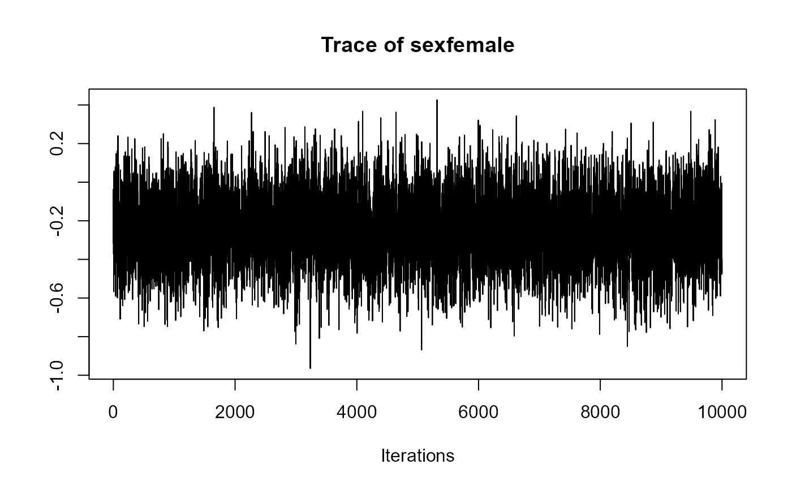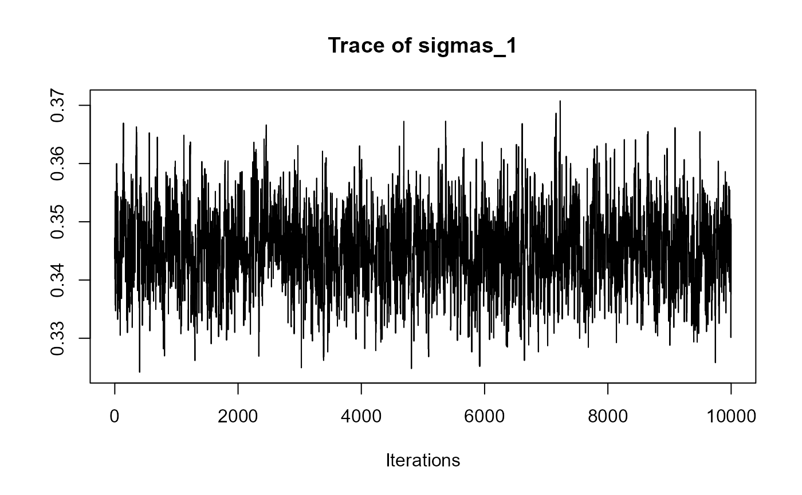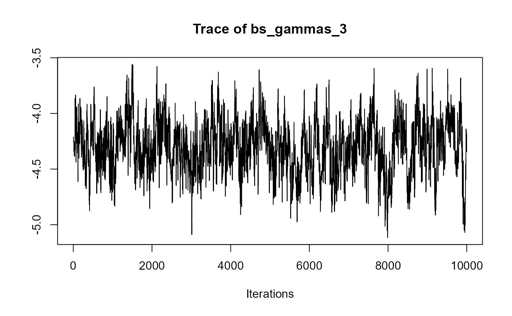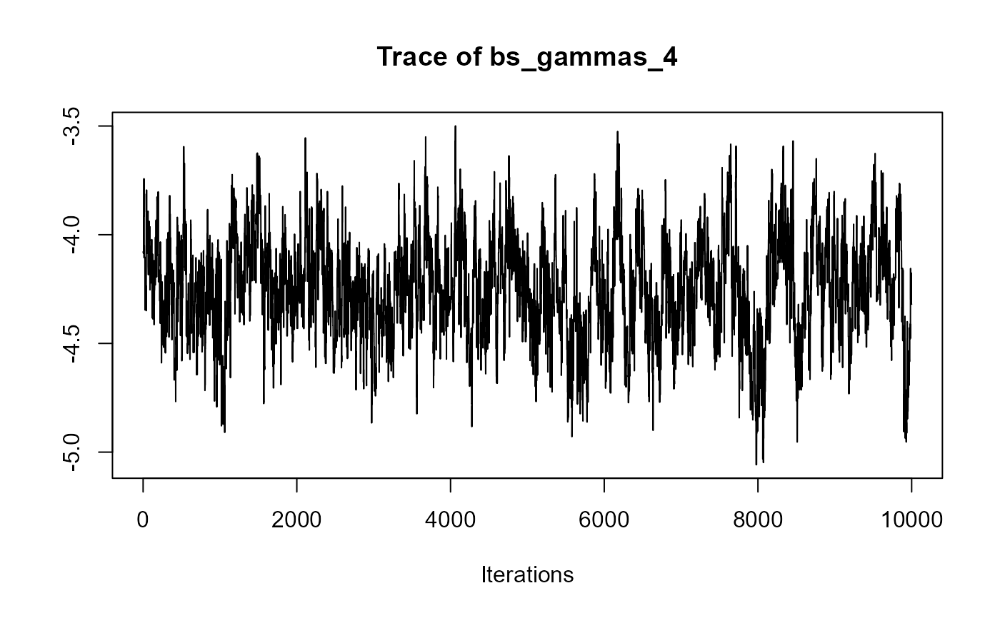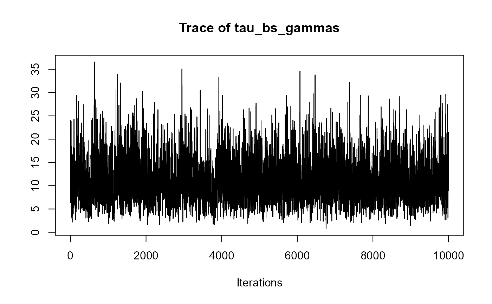################################################################################ ########################################################################## # Multivariate joint model for serum bilirubin, hepatomegaly and ascites # # 1 continuous outcome, 2 categorical outcomes # ########################################################################## # [1] Fit the mixed-effects models using lme() for continuous # outcomes and mixed_model() for categorical outcomes. fm1 <- lme(fixed = log(serBilir) ~ year * sex, random = ~ year | id, data = pbc2) fm2 <- mixed_model(hepatomegaly ~ sex + age + year, data = pbc2, random = ~ year | id, family = binomial()) fm3 <- mixed_model(ascites ~ year + age, data = pbc2, random = ~ year | id, family = binomial()) # [2] Save all the fitted mixed-effects models in a list. Mixed <- list(fm1, fm2, fm3) # [3] Fit a Cox model, specifying the baseline covariates to be included in the # joint model. fCox1 <- coxph(Surv(years, status2) ~ drug + age, data = pbc2.id) # [4] The joint model is fitted using a call to jm() i.e., joint_model_fit_2 <- jm(fCox1, Mixed, time_var = "year", n_chains = 1L) summary(joint_model_fit_2)#> #> Call: #> jm(Surv_object = fCox1, Mixed_objects = Mixed, time_var = "year", #> n_chains = 1L) #> #> Data Descriptives: #> Number of Groups: 312 Number of events: 140 (44.9%) #> Number of Observations: #> log(serBilir): 1945 #> hepatomegaly: 1884 #> ascites: 1885 #> #> DIC WAIC LPML #> marginal 7102.107 8389.684 -4815.799 #> conditional 10808.438 12231.396 -7204.879 #> #> Random-effects covariance matrix: #> #> StdDev Corr #> (Intr) 0.9973 (Intr) year (Intr) year (Intr) #> year 0.1758 0.4009 #> (Intr) 3.5230 0.5164 0.3648 #> year 0.6445 0.1207 0.3470 -0.2851 #> (Intr) 3.3079 0.5801 0.5006 0.4874 0.0271 #> year 0.5469 0.4294 0.6087 0.3926 0.3407 0.0225 #> #> Survival Outcome: #> Mean StDev 2.5% 97.5% P #> drugD-penicil -0.1695 0.2660 -0.6740 0.3444 0.5433 #> age 0.0421 0.0141 0.0133 0.0684 0.0047 #> value(log(serBilir)) 0.7985 0.2128 0.3170 1.2051 0.0000 #> value(hepatomegaly) 0.0238 0.0739 -0.1371 0.1643 0.6913 #> value(ascites) 0.3147 0.1353 0.0931 0.7037 0.0000 #> #> Longitudinal Outcome: log(serBilir) (family = gaussian, link = identity) #> Mean StDev 2.5% 97.5% P #> (Intercept) 0.7058 0.2392 0.2301 1.1472 0.0013 #> year 0.2521 0.0650 0.1263 0.3821 0.0000 #> sexfemale -0.2406 0.2466 -0.7188 0.2415 0.3280 #> year:sexfemale -0.0718 0.0651 -0.1979 0.0537 0.2847 #> sigma 0.3824 0.0158 0.3548 0.4167 0.0000 #> #> Longitudinal Outcome: hepatomegaly (family = binomial, link = logit) #> Mean StDev 2.5% 97.5% P #> (Intercept) 0.4167 1.4202 -2.2888 3.2875 0.7813 #> sexfemale -1.0332 0.7341 -2.5232 0.3309 0.1540 #> age 0.0123 0.0230 -0.0331 0.0563 0.5780 #> year 0.3000 0.1495 0.0210 0.6041 0.0400 #> #> Longitudinal Outcome: ascites (family = binomial, link = logit) #> Mean StDev 2.5% 97.5% P #> (Intercept) -9.9162 1.9438 -14.1601 -6.5966 0 #> year 0.6494 0.1918 0.3199 1.0801 0 #> age 0.0878 0.0272 0.0386 0.1436 0 #> #> MCMC summary: #> chains: 1 #> iterations per chain: 3500 #> burn-in per chain: 500 #> thinning: 1 #> time: 0.4 min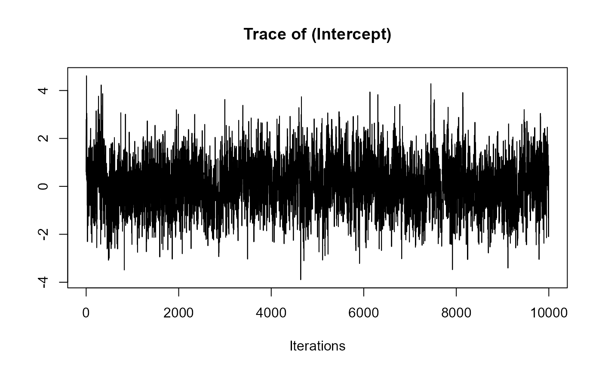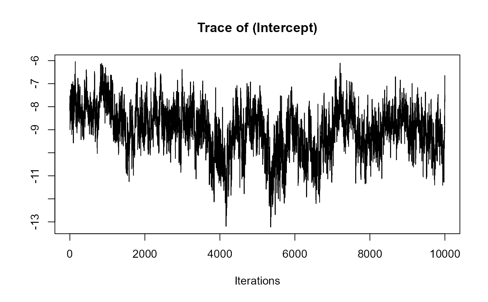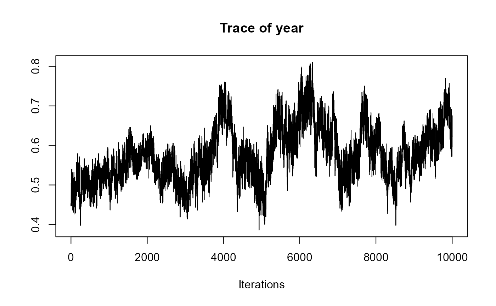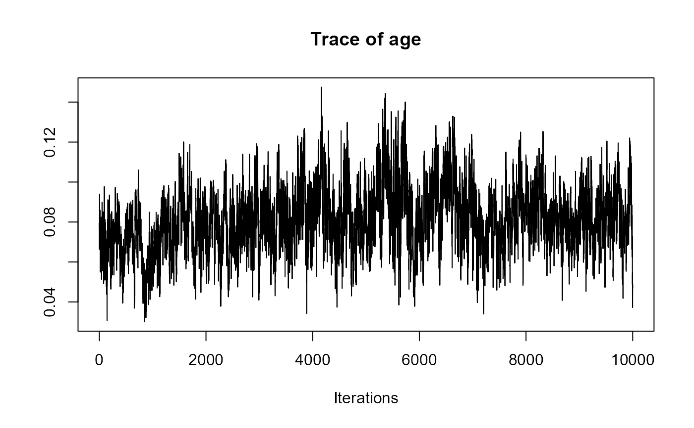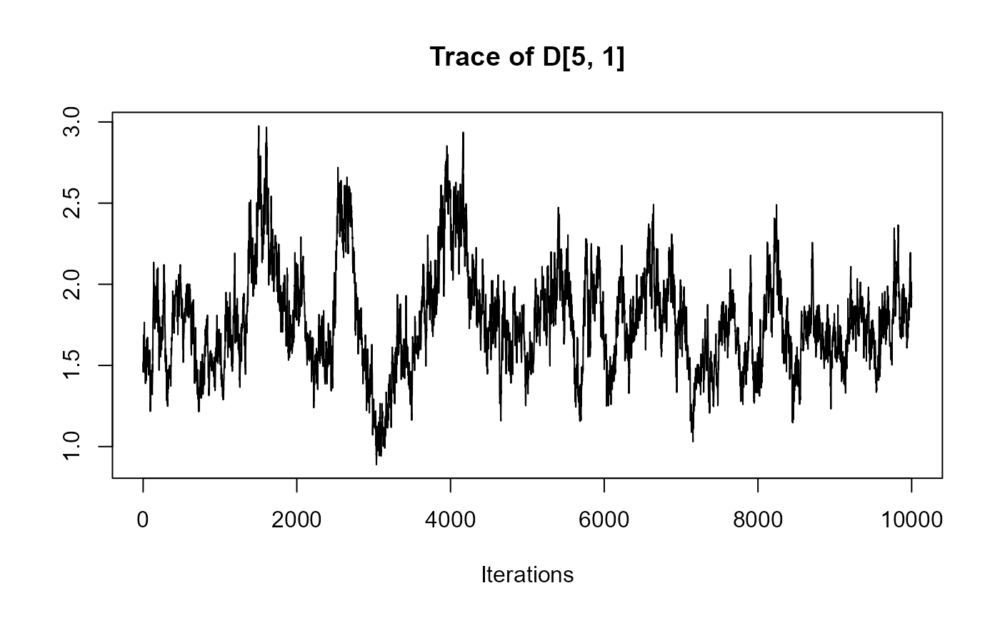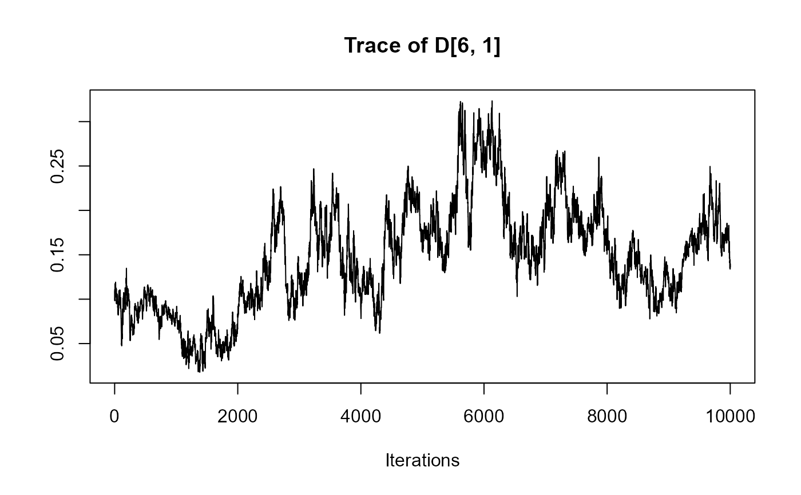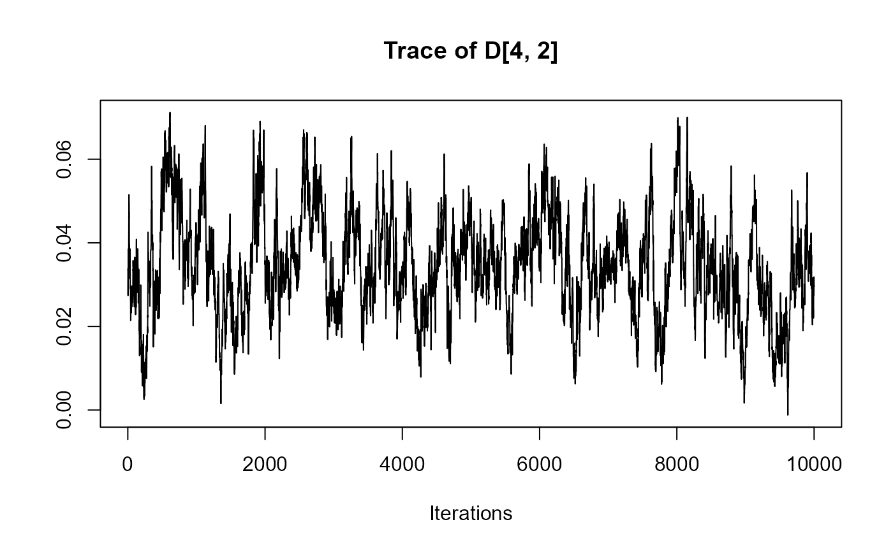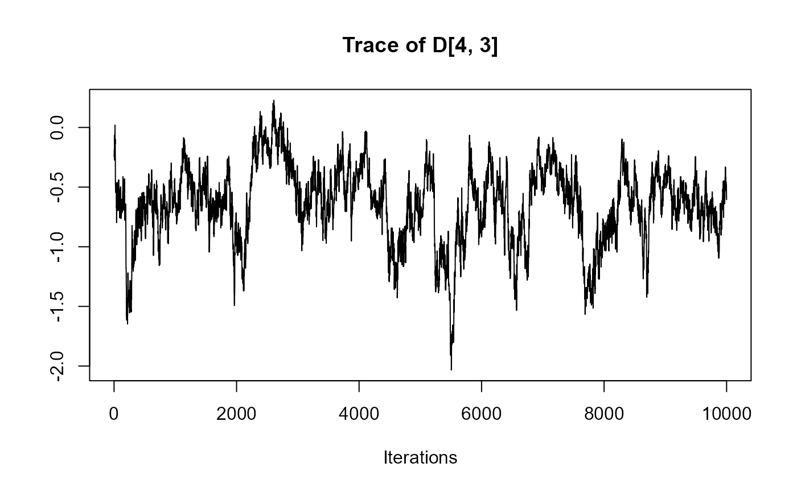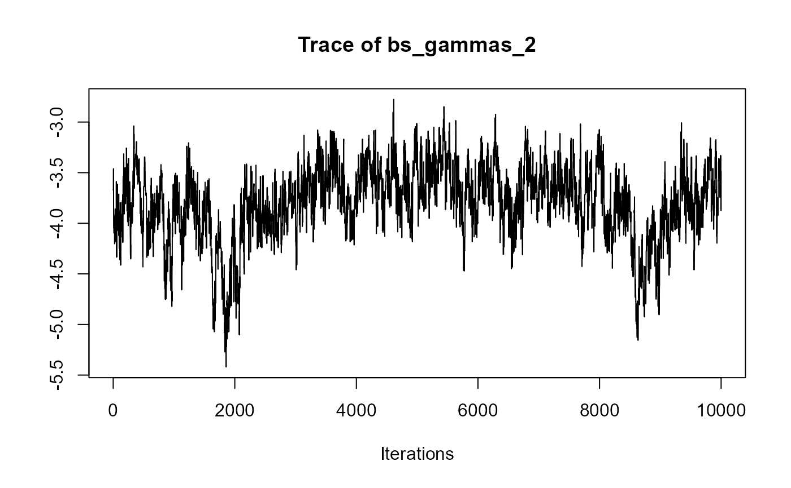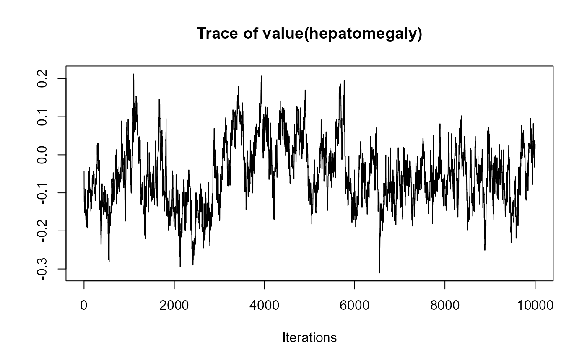################################################################################ ###################### # Slope & Area Terms # ###################### # We extend model 'joint_model_fit_2' by including the value and slope term for # bilirubin, the area term for hepatomegaly (in the log-odds scale), and the # value and area term for spiders (in the log-odds scale). # To include these terms into the model, we specify the 'functional_forms' # argument. This should be a list of right side formulas. Each component of the # list should have as name the name of the corresponding outcome variable. In # the right side formula we specify the functional form of the association using # functions 'value()', 'slope()' and 'area()'. # Notes: (1) For terms not specified in the 'functional_forms' list, the default # value functional form is used. # [1] Fit the mixed-effects models using lme() for continuous outcomes # and mixed_model() for categorical outcomes. fm1 <- lme(fixed = log(serBilir) ~ year * sex, random = ~ year | id, data = pbc2) fm2 <- mixed_model(hepatomegaly ~ sex + age + year, data = pbc2, random = ~ year | id, family = binomial()) fm3 <- mixed_model(ascites ~ year + age, data = pbc2, random = ~ year | id, family = binomial()) # [2] Save all the fitted mixed-effects models in a list. Mixed <- list(fm1, fm2, fm3) # [3] Fit a Cox model, specifying the baseline covariates to be included in the # joint model. fCox1 <- coxph(Surv(years, status2) ~ drug + age, data = pbc2.id) # [4] Specify the list of formulas to be passed to the functional_forms argument # of jm(). fForms <- list("log(serBilir)" = ~ value(log(serBilir)) + slope(log(serBilir)), "hepatomegaly" = ~ area(hepatomegaly), "ascites" = ~ value(ascites) + area(ascites)) # [5] The joint model is fitted using a call to jm() and passing the list # to the functional_forms argument. joint_model_fit_2 <- jm(fCox1, Mixed, time_var = "year", functional_forms = fForms, n_chains = 1L) summary(joint_model_fit_2)#> #> Call: #> jm(Surv_object = fCox1, Mixed_objects = Mixed, time_var = "year", #> functional_forms = fForms, n_chains = 1L) #> #> Data Descriptives: #> Number of Groups: 312 Number of events: 140 (44.9%) #> Number of Observations: #> log(serBilir): 1945 #> hepatomegaly: 1884 #> ascites: 1885 #> #> DIC WAIC LPML #> marginal 7064.148 8797.809 -4683.050 #> conditional 10758.996 12383.860 -7183.043 #> #> Random-effects covariance matrix: #> #> StdDev Corr #> (Intr) 0.9927 (Intr) year (Intr) year (Intr) #> year 0.1828 0.3743 #> (Intr) 3.7607 0.5162 0.3368 #> year 0.6830 0.0323 0.3235 -0.3859 #> (Intr) 2.5311 0.5909 0.5218 0.4736 0.0080 #> year 0.5134 0.4564 0.6053 0.4951 0.1637 0.1828 #> #> Survival Outcome: #> Mean StDev 2.5% 97.5% P #> drugD-penicil -0.1242 0.2851 -0.6918 0.4232 0.7067 #> age 0.0476 0.0145 0.0181 0.0741 0.0020 #> value(log(serBilir)) 0.9020 0.1868 0.5151 1.2417 0.0000 #> slope(log(serBilir)) 2.0005 0.9646 0.1944 3.8607 0.0347 #> area(hepatomegaly) 0.0836 0.0774 -0.0650 0.2288 0.2600 #> value(ascites) -0.1878 0.1502 -0.4323 0.1879 0.2387 #> area(ascites) 0.4647 0.2148 -0.0403 0.8597 0.0633 #> #> Longitudinal Outcome: log(serBilir) (family = gaussian, link = identity) #> Mean StDev 2.5% 97.5% P #> (Intercept) 0.7158 0.2392 0.2495 1.1863 0.0027 #> year 0.2563 0.0690 0.1189 0.3913 0.0000 #> sexfemale -0.2536 0.2481 -0.7324 0.2291 0.3153 #> year:sexfemale -0.0725 0.0695 -0.2067 0.0659 0.2913 #> sigma 0.3833 0.0161 0.3581 0.4202 0.0000 #> #> Longitudinal Outcome: hepatomegaly (family = binomial, link = logit) #> Mean StDev 2.5% 97.5% P #> (Intercept) 0.5430 1.4335 -2.1794 3.4509 0.7207 #> sexfemale -1.0744 0.7481 -2.5411 0.3627 0.1620 #> age 0.0121 0.0239 -0.0330 0.0584 0.6167 #> year 0.2677 0.1602 -0.0407 0.5838 0.0913 #> #> Longitudinal Outcome: ascites (family = binomial, link = logit) #> Mean StDev 2.5% 97.5% P #> (Intercept) -8.5009 1.5764 -11.7693 -5.6387 0.0000 #> year 0.4611 0.1672 0.1515 0.8197 0.0107 #> age 0.0774 0.0251 0.0288 0.1307 0.0000 #> #> MCMC summary: #> chains: 1 #> iterations per chain: 3500 #> burn-in per chain: 500 #> thinning: 1 #> time: 0.4 min# }